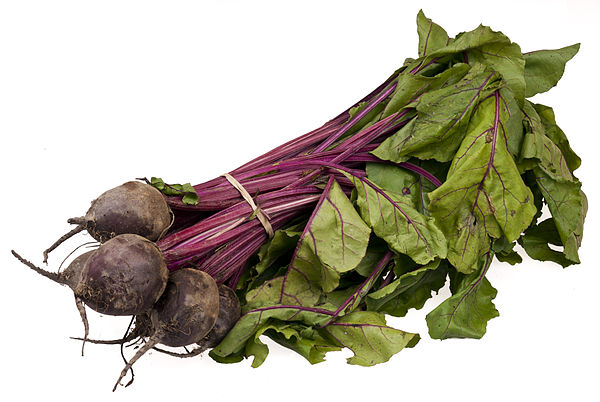

- Common varieties
- Nutritional information
- Tags

A bundle of organic beets from a local farm food co-op program. 55 to 65 days are needed from germination to harvest of the root.
The usually deep purple roots of beetroot are eaten either grilled, boiled, or roasted as a cooked vegetable, cold as a salad after cooking and adding oil and vinegar, or raw and shredded, either alone or combined with any salad vegetable.
In fact, Jim Halpert once said this about beets, "Fact, bears eat beets. Bears, beets, Battlestar Galactica"
I have some weird habits. For instance, I love beets. Show me a salad bar and I will clean them out of their beets.
Chris Pratt
Common varieties
- Albino
- Bull's Blood Chioggia
- Detroit Dark Red
- Early Wonder
Nutritional information
- Serving size:
- 100 g
- Energy:
- 180 kJ
- Carbohydrates:
- 9.96 g
- Fat:
- 0.18 g
- Protein:
- 1.68 g
Tags
Crimson
A wesome
Pickle-able
Vegetable!
Delicious
Source: Wikipedia; Last modified: Aug 30, 2014